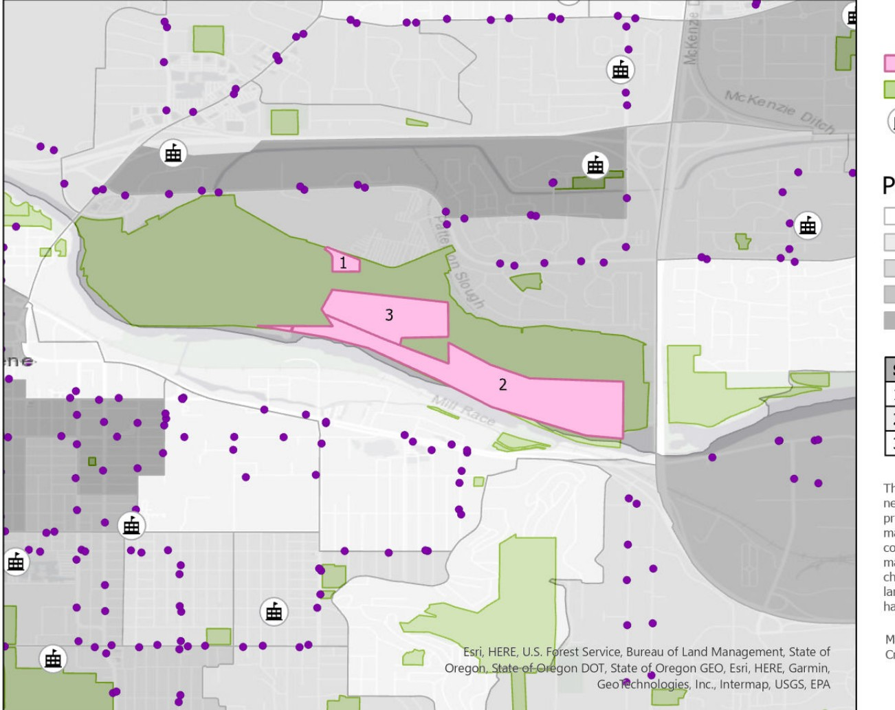
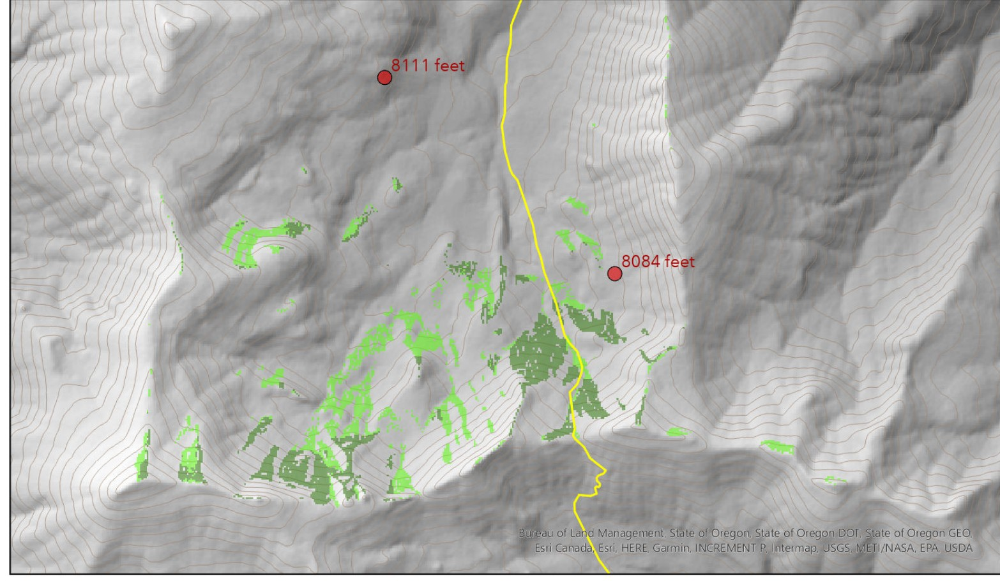
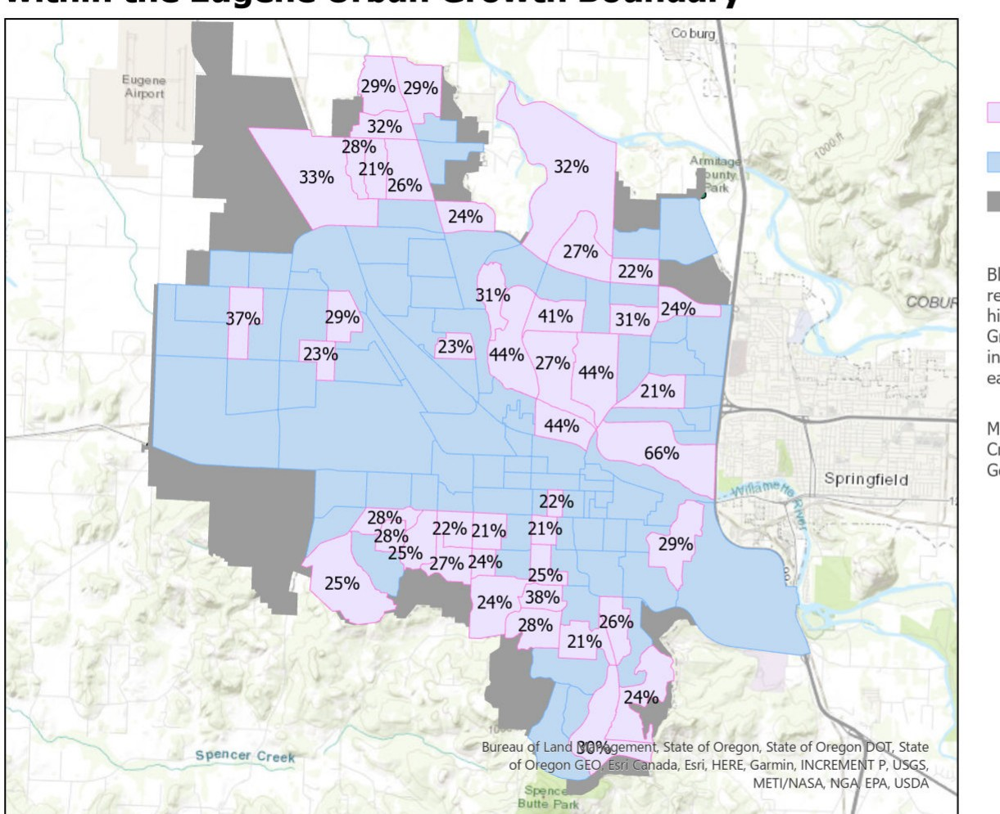
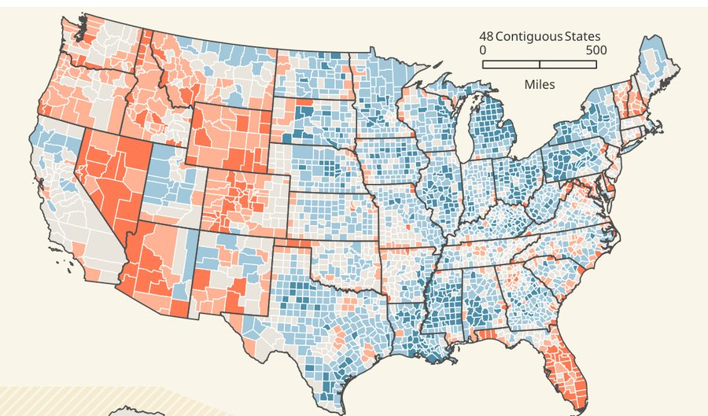
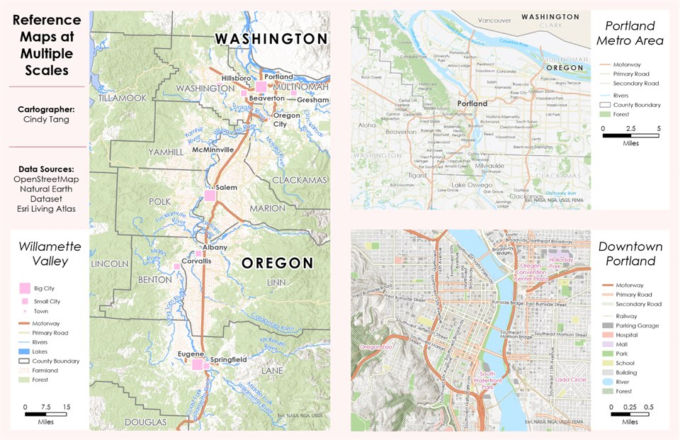

PROJECTS
all my projects.
A growing collection of GIS, mapping, and spatial analysis work.

Navigation Center Site Selection
Screened public parcels for a navigation center using GIS site selection and community context.
County Population Mapping
Compared county demographics through four thematic maps and distinct data visualization methods.

Wolverine Habitat Suitability
Combined raster suitability and visibility analysis to identify potential wolverine habitat.

Elderly Population & Community Access
Mapped older adult populations and analyzed access to nearby community resources.

2020 Census Map
Designed five choropleth maps to compare in-state-born populations across regions and geographic scales.

Custom Reference Maps
Designed a coordinated set of three basemap-free maps, from the Willamette Valley to downtown Portland.

Philomath Streets and Site Visit Locations
Mapped Philomath site visits and underdeveloped streets to support transportation planning.
Butters' Guide to Eugene
Built a playful, place-based guide to Eugene through the eyes of Butters.